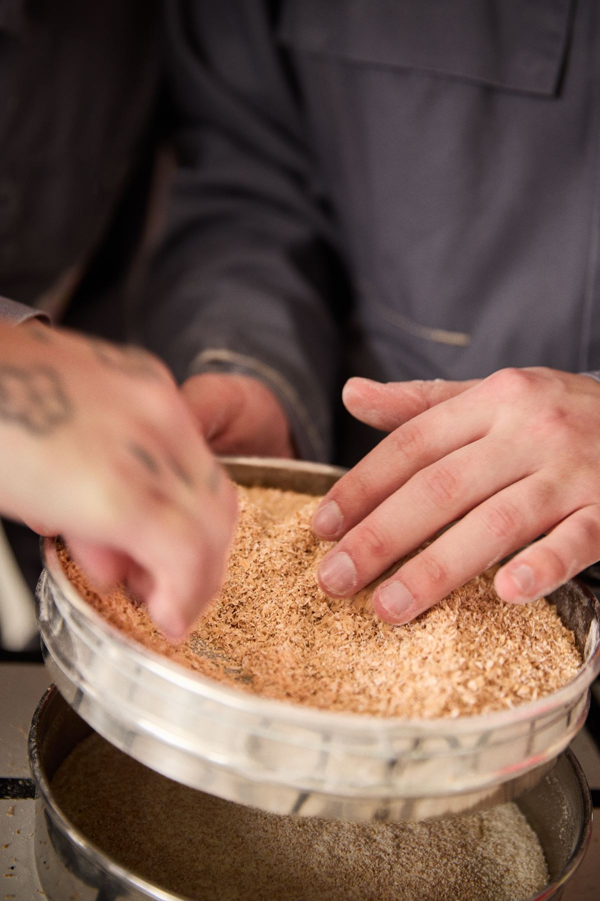
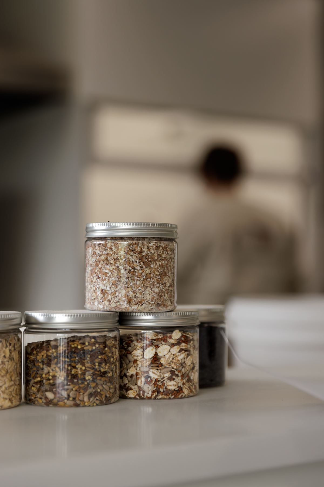
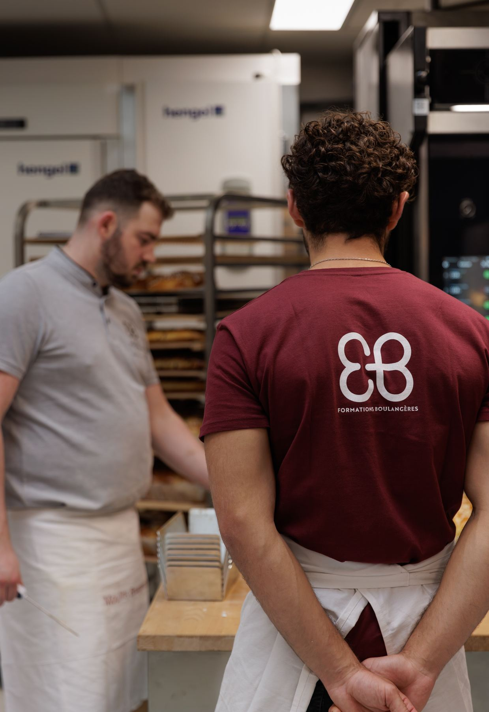
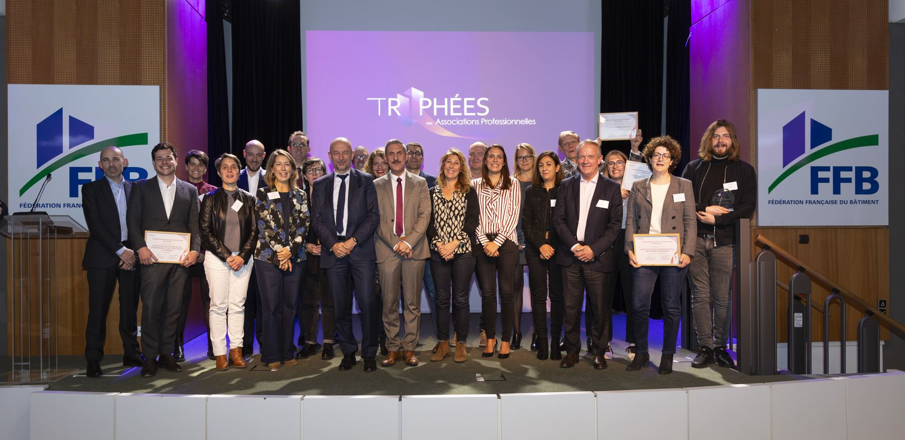

Pour l'ANMF, tout est à construire. La marque, l'identité, le territoire, le ton.
Lead stratégie & création, je conçois un système complet. La marque, le site, et tout le dispositif d'acquisition qui ramène vers lui. Une couleur pensée dès le départ pour tenir dans le temps.
La marque Chasseurs de Graines devient l'angle. Raconter la filière par ses mains, sa matière, ses gestes. Donner à voir ce qui se vit chaque jour.
Au cœur, le site ChasseursDeGraines.fr. Grâce au partenariat France Travail, il permet de candidater directement aux offres d'emploi de la meunerie et de la boulangerie.
Autour, un dispositif qui ramène vers lui. Une campagne réseaux et influence sur Facebook, Instagram et TikTok. Deux cents millions de sachets baguettes et des supports cofinancés par les meuniers et boulangers. Et l'événementiel, sur les salons étudiants comme ceux de l'Agriculture.
Sept millions de vues TikTok en un an, plus de cinquante retombées presse (BSmart, France Bleu, RMC, Le Parisien). Soutien du Ministère de l'Agriculture. Or en catégorie stratégie de communication aux Trophées du CEDAP, dès la première année.



